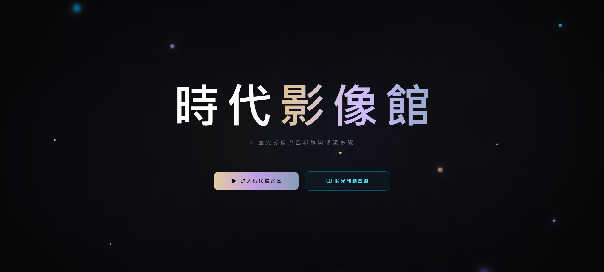
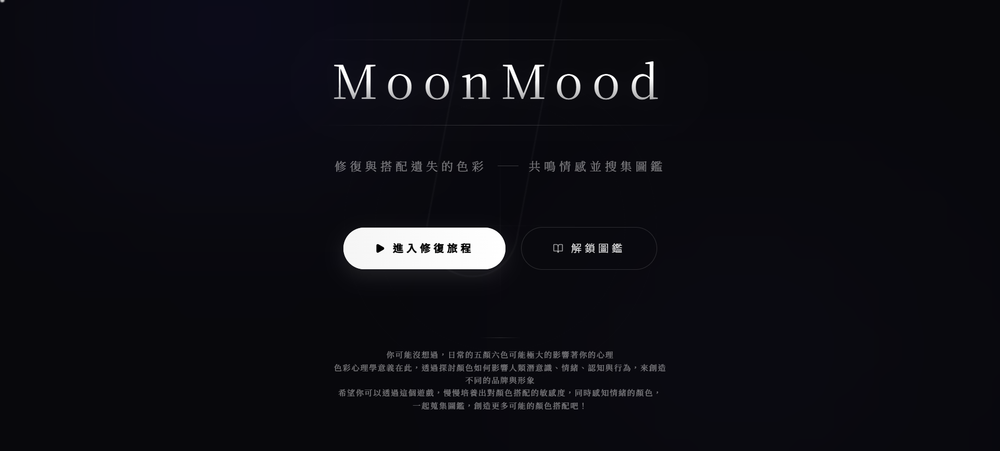

用色彩封存心靈悸動，以光影還原時代記憶

主要是學習色彩與歷史氛圍的互動網頁遊戲，同時精選多個具代表性的歷史照片為主題，讓玩家可以從場景思考當代所帶來的氛圍以及顏色，透過搭配色溫、飽和度、暗角、對比與曝光度來還原你對於這個時代的感受。
完成修復後送出交由智慧評分系統從三個維度分析你所還原的色調與真實歷史是否相符，若相符程度評級達標，則可以獲得時光碎片並解鎖時光修復日誌（回顧圖鑑），希望透過解鎖讓大家在其中學習歷史色彩與影像修復的知識。

主要是學習色彩與情緒的學習 App，同時也利用台灣知名繪本作家幾米的書籍為主題，讓玩家可以從書名思考文字所帶來的情緒以及顏色，透過搭配主色調、次色、強調色、背景色來決定你對於這個主題的感受。
完成搭配後送出交由 Gemini 由專業色彩學的角度分析你所搭配的色調與主題是否相符，若相符程度高於 70，則可以解鎖該主題圖鑑，希望透過解鎖讓大家在其中學習色彩與情緒的知識。